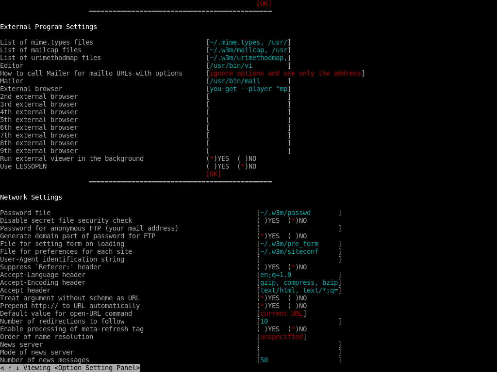
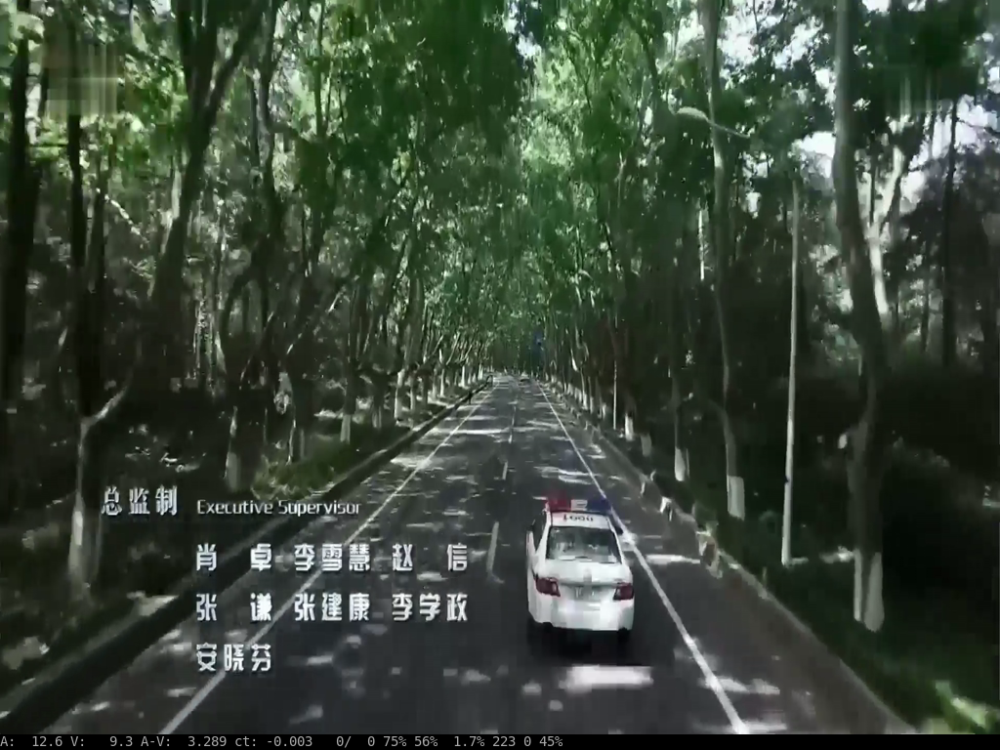

终端环境使用w3m访问视频站点的正确方式
w3m是一款不错的文本浏览器,可惜它并不支持flash控件,这使得用它来访问视频站点显得很无力.
不过只要借助you-get,mplayer这两个工具,也能实现在在w3m中播放视频站点中的视频.
步骤如下(我使用的是archlinux,而且由于机器太烂跑不动Xwindow所以选择了纯文本终端环境):
安装you-get和mplayer
sudo pacman -S you-get mplayer
配置w3m,修改它的第一外部浏览器为
you-get --player "mplayer -vo fbdev2 -x 1024 -y 768 -zoom"有二种方法可以修改w3m的配置:
第一种方法,打开w3m,然后按下
o键,在随后打开的配置页面中修改External browser的值. 然后在后面的OK按钮出按下保存. 第二种方法是直接修改
~/.w3m/config配置文件,在最后增加一行extbrowser you-get --player "mplayer -vo fbdev2 -x 1024 -y 768 -zoom"这里有必要说明一下,由于我是要在终端环境下播放视频,因此mplayer中用了
-vo fbdev2参数.这里的
-x 1024 -y 768指明了播放视频的大小,且-zoom说明了让mplayer进行缩放,这因为我的分辨率就是1024*768的. 若没有配置这些参数,则在播放较大分辨率的视频时会提示screensize is smaller than video size- 使用w3m 浏览youku等视频网站,然后在播放页面按下
M键,就能通过mplayer播放当前视频了. 